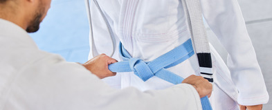

Ashihara karate
Hvad er Ashihara Karate
I Ashihara Karate-systemet, som er udviklet af, nu afdøde, Kancho Hideyuki Ashihara 10.Dan er moderne idrætsteori og -mekanik integreret med de bedste teknikker fra bl.a. den traditionelle karate, kendo og aikido, resulterende i at teknikkerne bliver hurtige og kraftfulde, hvilket er meget vigtigt i en kampsituation - ikke mindst i selvforsvar.
Kancho Hideyuki Ashihara (1944-95) opnåede at blive en levende legende, han åbnede sin første dojo (træningslokale) I en alder af kun 20 år, men vedblev helt indtil sin død at udvikle sit eget logiske system til fuldkommenhed.
Grundideerne i dette system er sikkerhed og kontrol; Et sikkert forsvar baseret på cirkulære undvigelser til siderne fremfor konfrontation med modstanderens kraft udgør grundlaget for at kontrollere modstanderen og, om nødvendigt, at indsætte en afgørende teknik.
Kancho Ashihara mente ikke at de traditionelle kampsystemer, som han allerede var mester i, var effektive nok og viede derfor sit liv til udviklingen af Ashihara Karate, som sætter én i stand til at besejre en fysisk overlegen modstander igennem brugen af “Sabaki” ; som bedst kan oversættes: kamp- kontrol af modstanderenIkke mindst på grund af sin enestående effektivitet er Ashihara Karate blandt andet brugt til undervisning af politifolk i Japan.
I 1980 grundlagde Ashihara Kancho New International Karate Organisation, Ashihara Kaikan med hovedskole i Matsuyama på øen Shikoku. og lod dermed Ashihara Karaten udbrede sig og I løbet af kort tid blive det populæreste karatesystem I Japan.
Idag findes der Ashihara karate skoler overalt i verden (alene i Danmark omkring 20 klubber). Intet andet karatesystem har på så kort tid opnået en tilsvarende udbredelse og popularitet. På trods af den enorme udbredelse er hver enkelt klub ud over hele verden direkte tilknyttet hovedskolen I Japan og Ashihara Karate Aarhus' bedste instruktører er uddannede dér.
I Ashihara Karate lægges der vægt på en god træningsindsats og en respektfuld indstilling til karate. Gennem karatetræningen lærer man hele tiden at udfordre sig selv og sætte sig nye mål for at blive bedre.
Vil du vide om Ashiharas tidligere historie?
Motion
Styrke
Balance
Disciplin
Respekt
Sammenhold
Målsætninger for Ashihara Karate
Ashihara Klubberne i Danmark er idag organiseret i D.A.O. Dansk Ashihara Organisation. De repræsentere de danske Ashihara klubber og arbejder med klare målsætninger inden for sporten.
Ashiharas Karate målsætninger:
- At forbedre form og balance
- At øge hastighed/hurtighed
- At øge sin styrke
- At lære mere og mere avancerede teknikker.
Vidste du, at Ashihara Karate følger en international etikette?
Læs mere om karate etikette for dojo, træning og gi ved at følge nedenstående link.
